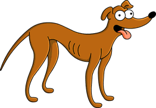

<!-- Evan Pulido-->
<!-- ITSC 3146-->

<!-- This program creates an HTML page with a picture of
     a fictional character of my choice. This picture is
     saved in a different folder and a relative link is
     the source. Under the picture, there is a paragraph
     describing the picture-->

<!-- Link that helped me create an HTML page with a picture:
https://www.w3schools.com/html/html_filepaths.asp
https://www.w3schools.com/html/html_images.asp-->

<!DOCTYPE html>
<html>
<body>
    <!-- I could not figure out how to get an image from a different folder, so I just put the picture in this folder-->
    
    <!-- This link taught me how to write paragraphs and use line breaks:
         https://www.w3schools.com/html/html_paragraphs.asp-->
    <p>This is an image of Santa's Little Helper from the tv show 'The Simpsons'.<br>This fictional character is a 
        dog and he is the color brown. He has a black<br>nose and a pink tongue. He used to be a racing dog until
        he was adopted<br>by the Simpsons family. Now he lives with the Simpsons doing dog stuff<br>like sleeping, 
        eating, playing, and walking. This fictional character is<br>introduced in multiple episodes of the show.</p>
</body>
</html>